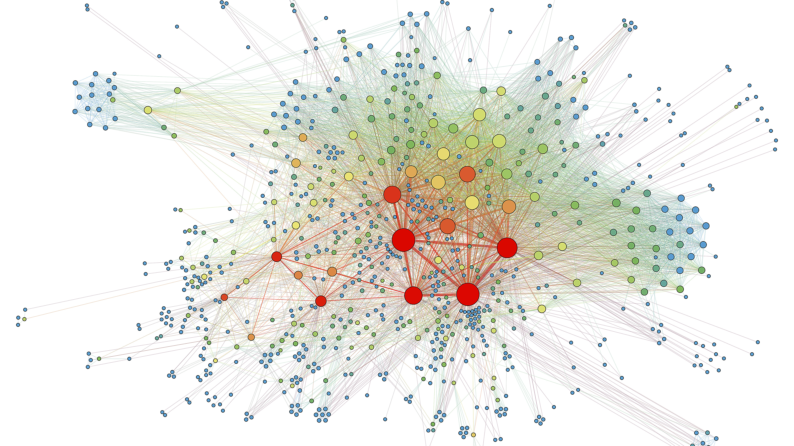

Analytical representation of multi-jurisdictional shell corporate nodes and nominee ownership layers.Corporate opacity is rarely an accident. In cross-border mergers, private equity buyouts, and high-value sovereign transactions, opaque entity layering is deliberately engineered to mask the identity of sanctioned oligarchs, politically exposed persons (PEPs), or executives diverting corporate assets.
While open-source registry searches frequently stop at the first tier of nominee directors in jurisdictions like the British Virgin Islands, Cyprus, or Delaware, sophisticated forensic investigations require a multi-disciplinary protocol combining deep registry extraction, litigation docket cross-referencing, and targeted human source verification.
Table of Contents
1. The Anatomy of Layered Nominee Structures
In a typical multi-tier concealment architecture, the acquiring party encounters an operating company owned by a holding company incorporated in a mid-shore jurisdiction, which in turn is held by a trust or foundation in an offshore financial center. Nominee directors—often local corporate services providers—appear on official public certificates of incumbency.
However, the true beneficial owner exercises control through side agreements, powers of attorney, or unrecorded call options that never appear in standard commercial registry gazettes. Unraveling this requires cross-jurisdictional tracing:
Strategic Takeaway for Deal Counsel
A clean Certificate of Good Standing from a corporate registry proves only that statutory franchise fees have been paid. It does not establish beneficial ownership or confirm the absence of undisclosed pledge agreements, freezing injunctions, or regulatory sanctions.
2. Digital Registry Telemetry & Document Gaps
Modern corporate investigators examine not only what the filing contains, but what is conspicuously absent. Missing annual returns, frequent changes in registered agents, shared nominee addresses with known high-risk entities, and sudden corporate reorganizations preceding transactions are prime indicators of obfuscation.
By cross-referencing digitized trademark registries, maritime vessel documentation, patent filings, and local land titling deeds across different jurisdictions, investigators frequently locate the signature or personal address of the beneficial principal where it was inadvertently recorded.
“The principal always leaves an economic footprint. Whether through the bank providing letters of credit, the foreign property holding company, or personal guarantees signed for operational leases, true ownership inevitably reveals itself to rigorous cross-border scrutiny.”
3. Financial Forensics: Tracking Economic Substance
When public paper trails hit dead ends in opaque jurisdictions, forensic accounting principles provide the breakthrough. By examining the flow of management fees, licensing royalties, and intercompany loans, investigators identify who ultimately benefits from company dividend streams.
| Red Flag Indicator | Nominee Justification | Forensic Investigation Reality |
|---|---|---|
| Sole Corporate Director in Tax Haven | “Administrative efficiency” | Acts on instructions under hidden general power of attorney. |
| Circular Intercompany Licensing | “Intellectual property optimization” | Siphoning operating profits to an undisclosed principal trust. |
| Frequent Registered Agent Switching | “Service fee dispute” | Evasion of enhanced AML/KYC customer due diligence demands. |
4. Defensible Evidentiary Standards for General Counsel
For investigative findings to provide genuine commercial utility, they must be legally admissible and capable of supporting indemnification claims, deal renegotiation, or mandatory disclosures under international anti-bribery regulations.
At Veritas Intelligence, our deliverables provide an unassailable evidentiary audit trail: certified registry photocopies, documented interview logs, date-stamped open-source archives, and a definitive Red Flag Heatmap detailing probability and legal exposure.
About Elena Rostova
Elena has over 18 years of experience leading cross-border forensic accounting inquiries, beneficial ownership investigations, and asset tracing matters across Western Europe and Central Asia.